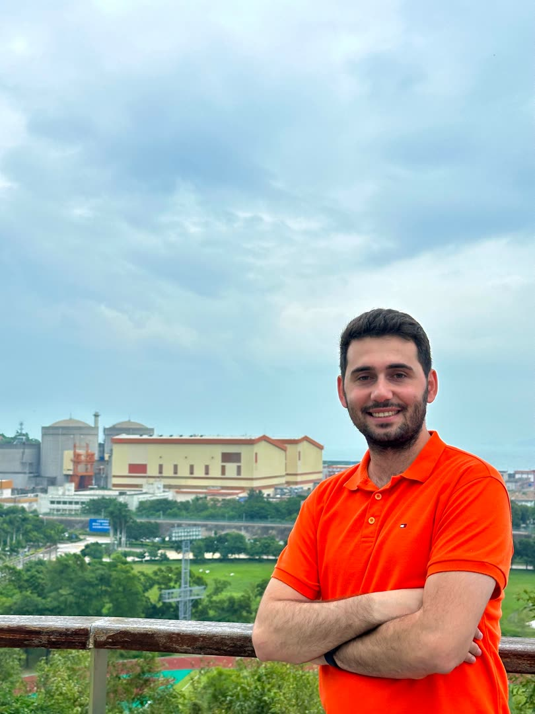

Qinshan Nuclear Power Plant
Training covered CANDU and pressurized water reactor systems, turbine equipment, operator simulation, and safety practices.
Training, research visits & project work
My work in nuclear engineering spans plant training in China, a graduate research visit in Canada, and engineering project work in Turkey.
Training covered CANDU and pressurized water reactor systems, turbine equipment, operator simulation, and safety practices.

Training covered plant design and construction, project delivery, reactor control, and safety culture.
Graduate visit / Ontario, Canada / 2026
I visited Chalk River Laboratories through Ontario Tech University's Graduate Immersive Experience. The program introduced me to Canadian nuclear research, including CANDU systems, nuclear fuels, and work in cybersecurity and machine learning.
Project experience / Turkey